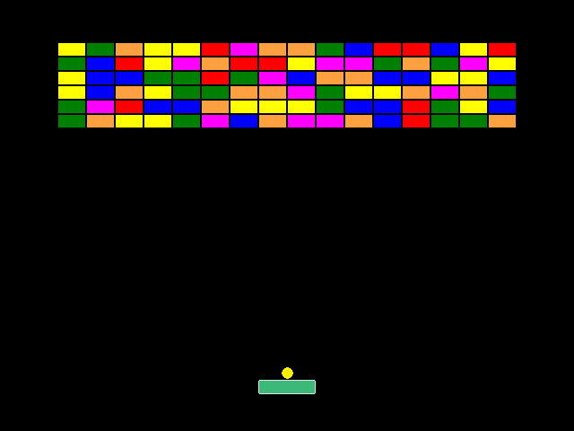
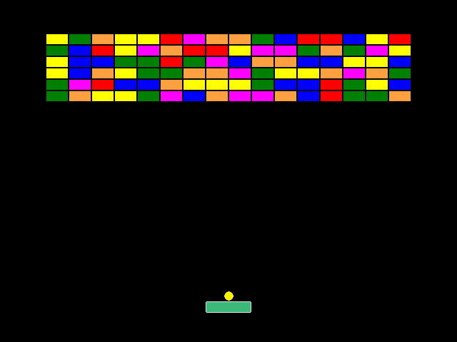
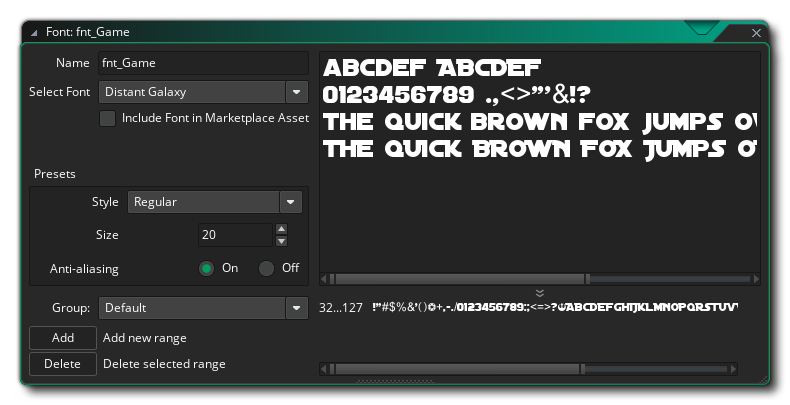
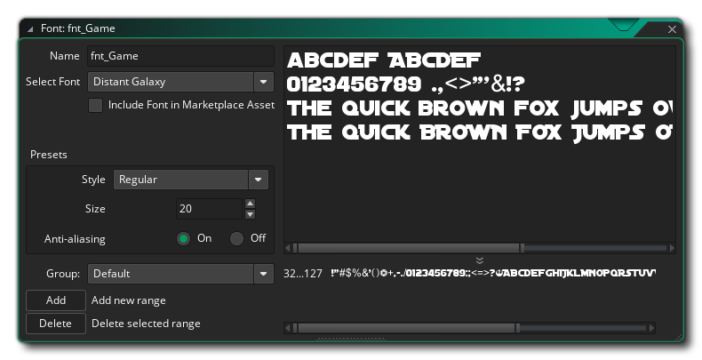
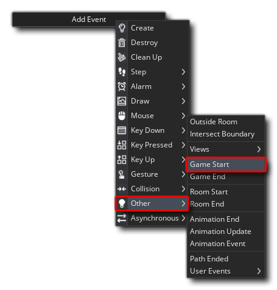
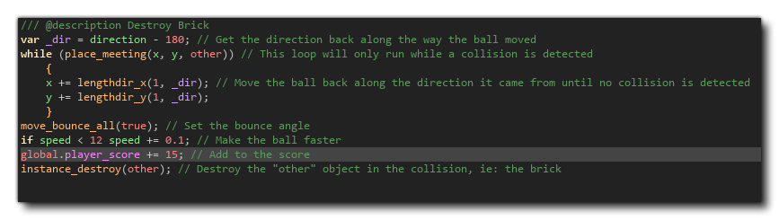
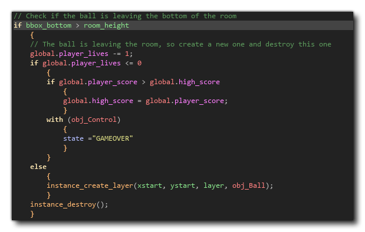

The time has come to test our game! This is the easy part as you're required to do is press the "play" button  at the top of the GameMaker Studio 2 IDE. If all has gone correctly, your game will run and you can play it using the "Space" key and the Arrow keys:

at the top of the GameMaker Studio 2 IDE. If all has gone correctly, your game will run and you can play it using the "Space" key and the Arrow keys:

This is a great start, but it's missing a few things to make it a "complete" game - namely player lives and a score. We want the game to give you three "lives" and keep track of the score you get from each brick destroyed, so for that we are going to make a controller object (A controller object is simply an object in your game that is designed to control the things that go on in the background, and it usually doesn't have a sprite assigned to it although it can have, and it can also draw stuff independently as we'll see).
Before adding the controller however, let's add a Font resource, as we'll want our controller to draw some text to the screen later. To add a font, simply right click  on the Fonts resource and select Create Font. In the font window that opens, name the font "fnt_Game" and then select something that you think is appropriate, setting the size to something like 20:

on the Fonts resource and select Create Font. In the font window that opens, name the font "fnt_Game" and then select something that you think is appropriate, setting the size to something like 20:

You can close the Font editor now.
For our controller you will need to create a new object, call it "obj_Control", and then add a Create event with the following code:
/// @description Init Vars
state = "START"
We'll be using this variable to set the "state" of the controller so that it knows whether the game has to start, is being played, or is finished. Apart from this, we'll also use the Game Start event to initialise some global variables: 
In this event add this code:
/// @description Init Global Vars
global.player_score = 0;
global.player_lives = 3;
global.high_score = 0;
These global variables will permit us to keep track of important values without having to worry about which instance of an object is accessing them or changing them, and by initialising them in the Game Start event, they will only be initialised once even if we restart the room (but if we restart the game they will be reinitialised).
We now need to draw the score and lives of the player to the screen so you'll need to add a Draw event to the object. Note that like the Step event category, the Draw event has a number of different event types that can be used, but for this game simply use the regular Draw event (you can find out more about the different draw events from the manual):

In this event we'll need the following code:
/// @description Draw Values
// Set draw properties
draw_set_colour(c_white);
draw_set_font(fnt_Game);
// Draw the player score
draw_set_halign(fa_left);
draw_text(8, 8, "Score: " + string(global.player_score));
// Draw the high score
draw_set_halign(fa_right);
draw_text(room_width - 8, 8, "Hi Score: " + string(global.high_score));
// Draw the player lives as sprites
var _x = (room_width / 2) - (32 * (global.player_lives - 1));
repeat(global.player_lives)
{
draw_sprite_ext(spr_Bat, 0, _x, room_height - 16, 0.75, 0.75, 1, c_white, 0.5);
_x += 64;
}
Here we are drawing the score across the top of the room, and then a series of sprites (scaled down) to represent the player lives at the bottom.
We need to add one final event to this controller object, a Step event. Add this now, and give it the following code:
/// @description Check Room Restart
if instance_number(obj_Brick) <= 0
{
room_restart();
}
else
{
if state == "GAMEOVER"
{
if keyboard_check(vk_anykey)
{
audio_play_sound(snd_Click, 0, false);
global.player_score = 0;
global.player_lives = 3;
room_restart();
}
}
}
Here we're going to simply restart the room when the player destroys all the bricks (and because we are using global variables, this will not reset the score or lives), or we'll wait for the player to restart the room if all the lives are gone.
Now that we have that done, and before continuing on to do anything else, open the Room Editor and add this object into the game anywhere then close the room editor again...
Before we go on to test this, we need to add a few extra lines of code to our object "obj_Ball", so open that now. We need to calculate the score and tell the controller when the player has a lost a life, etc... so to start with we'll edit the Collision event with the brick object so that it adds to the global score variable. You want to add the following after the move_bounce_all() function call:
global.player_score += 15; // Add to the score
The code will now look like this: 
We also need to modify the Intersect Boundary event with this code added into the block if bbox_bottom > room_height:
global.player_lives -= 1;
if global.player_lives <= 0
{
// Check for new highscore
if global.player_score > global.high_score
{
global.high_score = global.player_score;
}
// Set controller state
with (obj_Control)
{
state ="GAMEOVER"
}
}
else
{
// Only create a new ball if the player has lives
instance_create_layer(xstart, ystart, layer, obj_Ball);
}
This code block will now look like this: 
Go ahead and play the game now! If all has gone well, you should see intro text on the screen, a score that changes as you play, lives as markers along the bottom and the game should change according to whether you have no lives left or you destroy all the bricks.